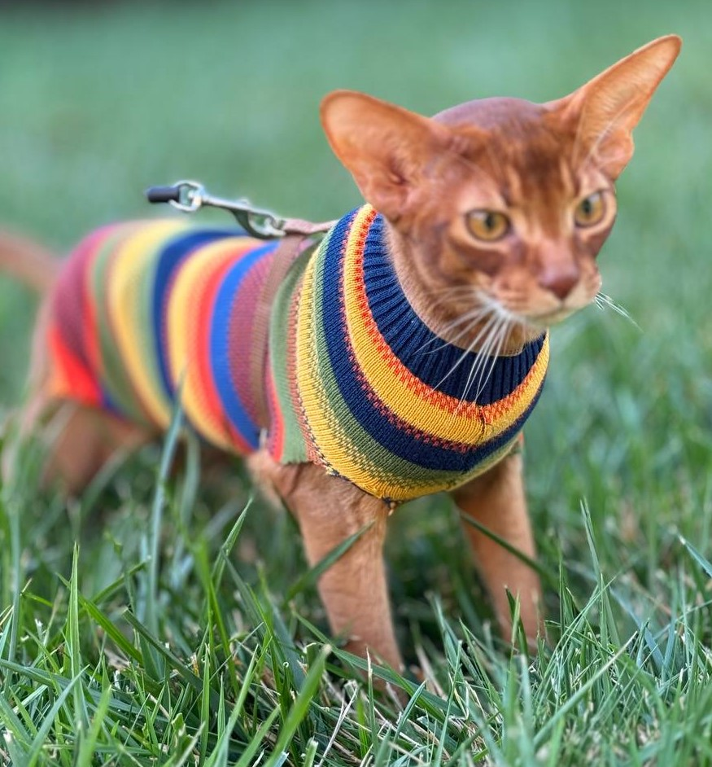

Моя домашня тваринка це кіт, його звуть Арчі. Він Абіссінец - Абіссінская порода. Йому 5 місяців. Ось як він виглядає.
Абісинська (абіссинська[1][2] або абісінська[3][4]) (англ. Abissinian, ABY) — порода кішок, що має особливе забарвлення (зональне), схоже на забарвлення зайців або кроликів. На тілі немає ніякого малюнка. Таке забарвлення забезпечується тим, що кожен волосок має смуги, які чергуються (тікінг) — світлі (жовті або охристі) і темні (чорні або коричневі). Відбувається це тому, що при розвитку волосся в ньому впереміш відкладається то темний, то світлий пігмент. У зайців або кроликів на волоску є тільки одне темне кільце, тоді як в абісинських кішок два або три (подвійний або потрійний тікінги). Таке забарвлення також називають агуті. Існує кілька гіпотез походження породи. Одна з них — походження кішок від місцевих порід, у яких у результаті мутації виникло подібне забарвлення. Інша версія — походження породи від завезених з Північної Африки тварин. Причому в сучасних кішок Північної Африки подібне забарвлення не зустрічається, тому що подібні кішки існували в давнину. Можливо, предок породи був вивезений з південно-східної Азії або Афганістану. Є навіть версія походження абісинок від диких кішок. Одним із предків вважається дика африканська кішка, що жила на території Абісинії (нині Ефіопія). У 1868 році британська військова експедиція привезла таку кішку з Ефіопії у Велику Британію, де з нею була продовжена селекційна робота. У Великій Британії абісинські кішки як порода були вперше зареєстровані в 1882 році. До 1970 року ця порода була визнана у всіх країнах світу. Тепер вона має популярність у багатьох країнах. Офіційно зареєстрували породу тільки в 1904 році, а через три роки пара сріблястих абісинських красунь вирушила до Америки. Під час війни багато породи тварин мало не зникли, і абісинська кішечка не стала винятком. Друге народження в Європі вона отримала вже після закінчення другої світової війни за допомогою американських заводчиків. Характер (інформацію брав з сайту https://uk.wikipedia.org/wiki/%D0%90%D0%B1%D1%96%D1%81%D0%B8%D0%BD%D1%81%D1%8C%D0%BA%D0%B0_%D0%BA%D1%96%D1%88%D0%BA%D0%B0)